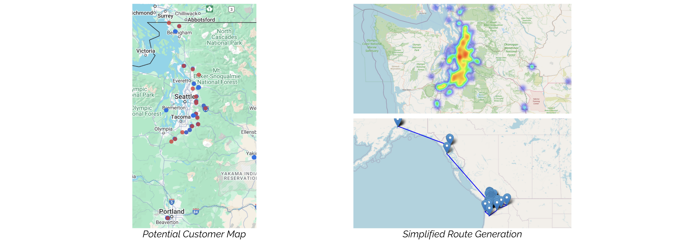

Customer Segmentation &
Profitability Analysis
Python | Tableau | Excel | Business Intelligence | Stroytelling
About Uwajimaya:
Uwajimaya is a well-known Asian grocery and specialty food retailer based in the Pacific Northwest, serving both individual consumers and restaurant clients through its Food Service International (FSI) division. With a focus on authentic Asian products and regional distribution, Uwajimaya plays a central role in supplying a wide variety of restaurants across Washington and neighboring states.As part of the University of Washington MSBA Capstone, our team partnered with Uwajimaya’s Food Service International (FSI) division to analyze over 920,000 transaction records, aiming to generate actionable insights in customer behavior, product profitability, and delivery optimization. Our approach leveraged a combination of clustering, customer segmentation (RFM), and geospatial analysis to support strategic decision-making. We focused on identifying key growth opportunities through high-impact products, profit-driving customer segments, and untapped delivery potential. Uwajimaya sought to better understand which products were most profitable, how customer value varied across, and how delivery routes might be further optimized for insights that would support both operational efficiency and targeted customer engagement.
Data Cleaning & Preparation
Before diving into the analysis, we conducted a thorough data preparation process to ensure the quality and consistency of the dataset. This foundational step was essential for enabling downstream profitability analysis, segmentation, and geospatial modeling.Key tasks included:
- Customer Record Consolidation: Merged duplicate customer entries and standardized customer identifiers to ensure a unified customer profile across all datasets.
- Address Standardization: Cleaned and formatted customer address fields to ensure accuracy and compatibility with geocoding tools.
- Missing Value Handling: Addressed incomplete records through logical imputation and validation techniques.
- Feature Engineering: Created derived metrics such as total profit, category-level performance, and customer-level RFM scores.
- Geocoding with Google Maps API: Since the original dataset did not contain latitude and longitude, we implemented a Python-based solution using the Google Maps Geocoding API to convert customer addresses into precise geographic coordinates. This step was critical for enabling distance calculations, route planning, and potential new customer identification.
Product & Category Profitability
We began by analyzing overall profitability across five key product categories: Meat, Grocery, Produce, Non-Food, and Seafood. Profitability was calculated using the difference between sales price and cost per unit, multiplied by amount shipped. Meat contributed the largest share of total profit (42%), followed by Grocery (38%), despite having lower average product margins. Produce and Non-Food products had smaller overall contributions but stood out for their relatively high profit margins, often exceeding 20%. We then examined profitability at a more granular level, identifying which subcategories and individual products were key profit drivers. For example, Poultry: Frozen alone generated over $5.2M in profit, though it carried lower margins. In contrast, Rice and American Vegetables offered higher margins despite smaller volumes. At the product level, Chicken Thigh stood out for its large profit contribution due to high sales volume, while Beef Steer Flank stood out for their exceptionally high margins despite its low sales volume, which signal opportunities for premium pricing or selective upselling. This comparison helped us distinguish between volume drivers and margin leaders, the two essential levers for building a balanced and high-performing product portfolio.Product and Price Analysis
Four-Quadrant Analysis
With a clearer understanding of category-level contribution and margins, we then drilled down to the individual product level to evaluate performance based on both unit profitability and sales volume. This allowed us to identify opportunities for pricing adjustments or strategic promotion. We focus on the top 10 products based on total profits and plotted them in a two-dimensional space using average unit profit and total quantity. These were divided into four quadrants based on whether each metric was above or below the dataset average, giving us a clear, objective view of product positioning:- Top Right: Products with above-average unit profit and above-average sales volume
These are balanced performers that contribute on both revenue and volume fronts. CHX-Thigh fits here, with strong shipment numbers and slightly above-average per-unit profit. - Top Left: Products with below-average unit profit but above-average sales volume
These are steady movers with limited margin. Rice-Calrose, for instance, just exceeded the average volume line, signaling consistent demand despite tighter profitability. - Bottom Right: Products with above-average unit profit but below-average sales volume
These tend to be niche or high-end items. Beef-Steer Flank, while not a volume driver, delivers strong margin per unit. - Bottom Left: Products with below-average unit profit and below-average sales volume
A significant portion of the product catalog falls in this quadrant. Prioritize strategic reviews of these items whether through pricing optimization, cost reduction, or repositioning to enhance overall performance.
K-Means Clustering
To supplement our quadrant-based analysis, we applied K-Means clustering using unit profit and total quantity as input features. Based on interpretability and the elbow method, we selected k=3 to segment the top 10 products into meaningful groups.- Cluster 1 (Blue): CHX-Thigh stood out with exceptionally high sales volume, forming its own cluster.
- Cluster 0 (Red): Rice-Calrose and Noodle-Yakisoba were grouped together, reflecting moderate volume and mid-to-low profit, indicating a shared commercial profile.
- Cluster 2 (Green): The remaining products, including niche or low-volume items like Beef-Steer Flank and Oil-Soy Bean, formed a distinct cluster due to their lower scale or specialized role.
Note: Both analyses were based on the top 10 products by sales volume. Due to the small sample size, results are directional. Future work could expand the dataset or include more features for stronger segmentation.
Customer Segmentation Using RFM
While product-level analysis gave us a strong understanding of what sells, we also wanted to understand our customer behavior. To do this, we applied an RFM (Recency, Frequency, Monetary) segmentation model to classify engagement and group customers based on their purchase behaviors to identify high-value segments for targeted action.- Recency measures how recently a customer has placed an order
- Frequency reflects how often they’ve ordered over the period analyzed
- Monetary captures the total amount spent
- Top (RFM ≥ 14): Highly engaged, high-spending customers who recently placed orders
- Loyal (RFM 11–13): Reliable, consistently active customers with moderate to high spending
- Developing (RFM 7–10): Moderate engagement, potential to grow
- At Risk (RFM < 7): Low engagement, likely to churn
- New: First-time buyers within the last 14 days
- Inactive: No purchases in over six months
Geospatial Delivery Optimization & Customer Expansion
Following our customer segmentation, we extended our analysis geographically to explore delivery efficiency and expansion opportunities. Since the original dataset did not include latitude and longitude, we geocoded customer addresses using the Google Maps API into precise geographic coordinates and plotted them spatially. Our analysis focused on high-value (Top and Loyal) customers located near the outer edges of Uwajimaya’s current delivery zones. Using these as anchor points, we conducted a proximity based search and identified 97 nearby Asian restaurants within a 1-kilometer radius that closely resembled existing high-value clients in both behavior and profile. These findings represent strong candidates for strategic customer acquisition without requiring major changes to current delivery footprint.To explore delivery optimization potential, we calculated geodesic distances between customers and simulated routing paths using the Nearest Neighbor heuristic. While we lacked detailed delivery route data, this modeling helped reveal geographic clusters where delivery density could be improved and travel redundancy reduced. These findings lay the groundwork for more efficient vehicle utilization and smarter expansion into adjacent zones with concentrated customer value. 
Final Takeaways & Recommendations
Our analysis provided a holistic view of customer behavior, product performance, and geographic reach for Uwajimaya’s Food Service International division. By connecting transaction-level data with behavioral and spatial patterns, we identified multiple opportunities to enhance profitability, strengthen customer relationships, and expand intelligently.Product Strategy: We recommend exploring a differentiated pricing strategy informed by both margin and volume insights. Products such as CHX-Thigh, Rice-Calrose, and Noodle-Yakisoba showed strong contribution margins and consistent demand, making them potential candidates for value-based pricing adjustments. While additional factors such as competitor pricing, customer price sensitivity, and broader market conditions would need to be considered, the observed performance patterns suggest these items warrant closer pricing review in future strategic discussions. For lower-margin, lower-volume items, we suggest using non-price strategies such as bundling, promotional discounts, or personalized product recommendations to increase profitability without risking customer churn. Additionally, expanding Uwajimaya’s product assortment to include more non-Asian offerings may help attract a broader range of client, particularly among “Other Restaurants” identified in the customer segmentation.
Customer Strategy: The RFM segmentation framework can guide differentiated engagement strategies across the customer base. Loyal customers could be rewarded with exclusive benefits to reinforce retention, while targeted reactivation tactics can be designed for At Risk and Inactive segments based on recent activity, order value, and frequency trends. We recommend proactive engagement with At Risk and Inactive customers through loyalty campaigns and personalized outreach. These segments include many clients from core restaurant types such as Japanese Teriyaki and Thai Full Service, whose declining engagement likely reflects behavioral shifts rather than poor fit. Early outreach with tailored offers, custom product bundles based on past purchases, or limited-time promotions can help re-engage these customers and preserve valuable relationships.
Delivery Strategy: By leveraging spatial data, we identified 97 prospective Asian restaurants within a 1-kilometer radius that closely resemble existing high-value clients. These businesses represent a cost-effective expansion opportunity that would not require major changes to current delivery routes. In parallel, geodesic distance modeling and a Nearest Neighbor routing heuristic helped us identify geographic clusters particularly in Seattle, Bellevue, Tacoma, Everett, and Kent, where delivery density could be increased and redundant travel minimized. These findings support a targeted expansion strategy that improves operational efficiency while maintaining delivery scalability.